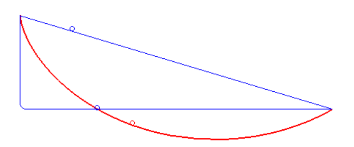
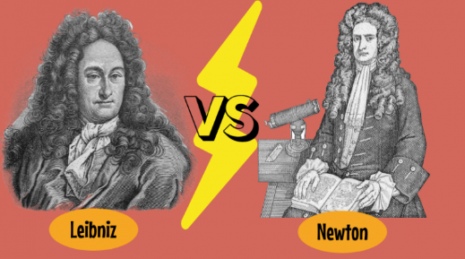

Johann Bernoulli nació el 27 de julio de 1667 en Basilea, Suiza, en el seno de una familia dedicada al comercio. Fue hermano menor del también matemático Jacob Bernoulli. Aunque inicialmente estudió medicina en la Universidad de Basilea por decisión familiar, pronto se inclinó hacia las matemáticas, influenciado por su hermano y por el desarrollo del nuevo cálculo creado por Gottfried Wilhelm Leibniz.
Johann Bernoulli se convirtió en uno de los principales difusores y defensores del cálculo diferencial e integral en Europa. Fue un matemático brillante y competitivo, conocido por su capacidad para resolver problemas complejos de mecánica y análisis. En 1696 propuso el famoso problema de la braquistócrona, un desafío matemático en el que se debía encontrar la curva por la cual un objeto desciende en el menor tiempo posible bajo la acción de la gravedad.
Aunque él ya conocía la solución, planteó el problema públicamente para demostrar el poder del cálculo. Varios matemáticos importantes, como Newton y Leibniz, enviaron soluciones correctas, confirmando que la curva buscada era una cicloide.
Johann fue profesor en la Universidad de Groningen y posteriormente ocupó la cátedra de matemáticas en la Universidad de Basilea. Entre sus estudiantes más destacados estuvo Leonhard Euler, quien más tarde se convertiría en una de las figuras más grandes de la historia de las matemáticas. A lo largo de su vida mantuvo rivalidades académicas, incluso con su propio hermano Jacob, así como con matemáticos ingleses durante la disputa entre newtonianos y leibnizianos sobre la invención del cálculo.
Falleció el 1 de enero de 1748 en Basilea, Suiza. Hoy es reconocido como una figura fundamental en la consolidación y expansión del cálculo en Europa durante los siglos XVII y XVIII, y como parte central de una de las familias más influyentes en la historia de las matemáticas.